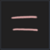
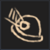
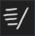
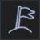
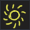

Runes
From Nikkis
Las runas son una clase única de elementos que se encuentran en todo el mapa y que le otorgan al jugador un beneficio específico al obtenerlos.
Mecánica
- Las ranuras para runas se encuentran en la sección de Equipo del kit de prospector.
- Hay un total de 5 ranuras para runas, donde la primera ranura se desbloqueará en el nivel 1. Las ranuras restantes se desbloquearán cada 10 niveles, donde la última ranura se desbloqueará en el nivel 40.
Todas las runas
| Runas | Icono | Descripción | Ubicación |
|---|---|---|---|
| Abisal | Gana un 20% más de suerte durante la noche. La oscuridad aumenta un 50% más lentamente. | En el Laberinto de las Profundidades Abisales, la otra área antes de dirigirse a la ubicación para obtener la sartén. | |
| Crítico I | Cavar tiene un 20% de posibilidades de tener el doble de fuerza. | Dentro de la cabaña del comerciante en Sunset Beach. | |
| Crítico II | Cavar tiene un 20% de posibilidades de tener el doble de fuerza. | Dentro de una de las chozas cerca del Ranger en la Isla Caldera. | |
| Descubrimiento | La probabilidad de obtener minerales no descubiertos aumenta en un 50%. | Dentro del Laberinto bajo el Faro de Windswept Beach, justo en la entrada más allá del podio/pedestal. | |
| Igualada |  | La velocidad de excavación y la velocidad de sacudida se igualan a su promedio. | Dentro de la cabaña detrás de Old Prospector en Fortune River Delta. |
| Explorador |  | Al recolectar geodas, obtienes un 20% de posibilidades de recolectar otra geoda. | En la cima de la Montaña de Piedra en el Delta del río Fortune. |
| Escalador de montaña | Gana 3 puntos de velocidad al caminar. | Pasando el puente en la primera zona de Montaña Nevada, sigue recto hasta que veas un arco a lo lejos, encontrarás la runa abajo. | |
| Pureza | Multiplicador de suerte +1x, pero ya no se pueden obtener modificadores. | Recibido al completar la misión del botánico. | |
| Soledad | +20% de suerte, pero se perdió el 10% de suerte por cada otro jugador dentro de los 50 studs. | Debajo de las rocas cerca del faro en Windswept Beach. | |
| Velocidad I |  | Gana 2 de velocidad al caminar. | En Rubble Creek, detrás de la roca (detrás de la tienda del comerciante). |
| Buscador de cumbres |  | Obtén un 5% de velocidad de excavación y sacudida por cada 1% de velocidad de caminata adicional. | Frente a la entrada en Snowy Peak. |
| Bendecido por el sol |  | Gana un 20% más de suerte bajo la luz del sol. | Dentro del área detrás de la cascada / puerta cerrada en Crystal Cavern. |
| Volcánico | Los minerales con el modificador quemado ganan un 25% de tamaño. | En la cima del volcán. (Para conseguirlo, debes completar la misión del Sacerdote del Fuego, ya que morirás por la lava). |